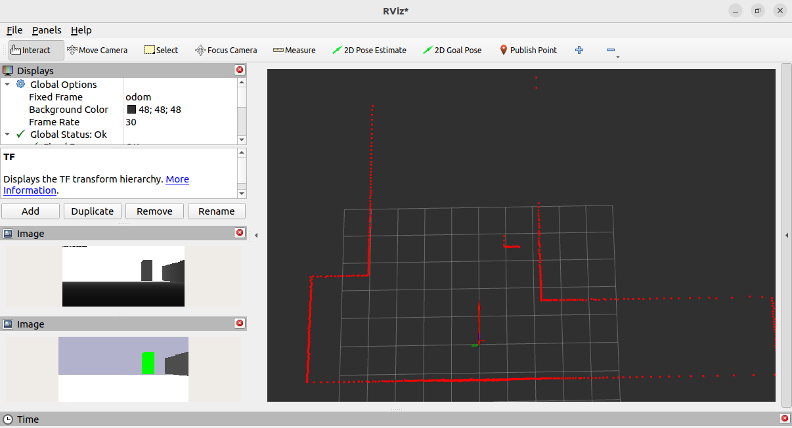

3.2.6 stage_ros2添加机器人
本节将在仿真环境中添加一个由底盘、摄像头以及激光雷达组成的虚拟机器人。
1.代码框架搭建
在world目录下新建robot目录，robot目录中再创建car_base.inc、camera.inc、laser.inc以及mycar.inc等文件，各文件作用如下：
- car_base.inc：用于设置机器人底盘模块；
- camera.inc：用于设置机器人相机模块；
- laser.inc：用于设置机器人雷达模块；
- mycar.inc：用于组装机器人各模块。
除此之外，还会在sim.world中包含mycar.inc并调用其生成机器人的功能。
2.设置机器人底盘
stage中的position模型可以以差速、全向或阿克曼的方式模拟移动机器人底盘。在car_base.inc中输入如下代码：
# 机器人底盘配置
define car_base position
(
color "red" # 车身颜色
drive "diff" # 车辆运动学模型
obstacle_return 1
ranger_return 1
blob_return 1
fiducial_return 1
localization "odom" # 定位方式
odom_error [ 0.05 0.05 0.0 0.1 ] # 里程计误差
# localization_origin [0 0 0 0] # 定位原点，默认为机器人的初始位置。
# [ xmin xmax ymin ymax zmin zmax amin amax ]
velocity_bounds [-1 1 0 0 0 0 -45.0 45.0 ] # 速度最值
acceleration_bounds [-0.5 0.5 0 0 0 0 -45 45.0 ] # 加速度最值
size [0.44 0.38 0.22] # 车体尺寸
origin [0 0 0 0] # 旋转中心与车体中心的偏移量
mass 23.0 # 车体质量，单位kg
gui_nose 0 # 是否绘制方向指示标记
block(
points 8
point[0] [-0.2 0.18]
point[1] [-0.2 -0.18]
point[2] [-0.15 -0.27]
point[3] [0.12 -0.23]
point[4] [0.2 -0.12]
point[5] [0.2 0.12]
point[6] [0.12 0.23]
point[7] [-0.15 0.27]
z [0 0.22]
)
)
position摘要和默认值
position(
drive "diff"
localization "gps"
localization_origin [<defaults to model's start pose>]
odom_error [0.03 0.03 0.00 0.05]
velocity_enable 1
)
详解
drive "diff", "omni" 或 "car"
选择差速转向模型、全向模式或类似汽车的阿克曼模式。localization "gps" 或 "odom"
如果选择 “gps”，位置模型将以完全准确的精度报告位置。如果选择 “odom”，将使用简单的里程计模型，并且位置数据会随时间与真实位置的差异而漂移。里程计模型由 odom_error 属性参数化。localization_origin [x y z theta]
您可以使用 localization_origin 参数来设置定位坐标系的原点。默认情况下，它将复制模型的初始姿态，因此机器人将报告相对于起始位置的位置。提示: 如果将 localization_origin 设置为 [0 0 0 0] 并且定位方式为 “gps”，模型将返回其真实的全局位置。这种设置是不现实的，但在希望抽象定位细节的研究中很有用。odom_error [x y z theta]
在选择 “odom” 定位方式时用到的里程计误差模型参数，每个值是计算里程计位置估计时积分 x、y 和 theta 速度的误差比例的最大值。对于每个轴，如果在此处指定的值为 E，则实际比例在启动时在 -E/2 到 +E/2 的范围内随机选择。请注意，由于舍入误差，将这些值设置为零并不能让定位完美无误 - 为了实现这一点，您需要选择 “gps” 定位方式。
3.设置摄像头
stage中的camera模型可以模拟深度相机。在camera.inc中输入如下代码：
define my_camera camera
(
range [ 0.3 3.0 ] # 相机采样范围
resolution [ 160 90 ] #相机分辨率 1280 × 720 / 8
fov [ 87 58 ] # 相机视场
pantilt [ 0 0 ] # 相机姿态
alwayson 1 # 是否一直处于启动状态
size [ 0.025 0.09 0.025 ] # 相机尺寸
color "gray" # 相机颜色
)
camera摘要和默认值
camera(
resolution [ 32 32 ]
range [ 0.2 8.0 ]
fov [ 70.0 40.0 ]
pantilt [ 0.0 0.0 ]
size [ 0.1 0.07 0.05 ]
color "black"
watts 100.0
)
详解
resolution [ width:<int> height:<int>]
相机分辨率。range [ min:<float> max:<float> ]
相机报告的距离范围，以米为单位。距离小于min或大于max的物体将无法显示。min数字越小，深度精度越低 - 不要将此值设置得太接近 0。fov [ horizontal: <float> vertical: <float> ]
水平和垂直视野的角度，以度为单位。pantilt [ pan:<float> tilt:<float> ]
相机的朝向角度，以度为单位。左右位置称为 pan，上下位置称为 tilt。
4.设置激光雷达
stage中的ranger模型可以模拟激光雷达。在laser.inc中输入如下代码：
define my_laser ranger
(
sensor(
range [ 0.0 15.0 ] # 雷达数据采集区间
fov 360.0 # 视角
samples 720 # 采样数
color_rgba [ 0 0 1 0.15 ] # 可视化光束颜色以及透明度
)
model # 雷达外观
(
pose [ 0 0 0 0 ] # 雷达位姿
size [ 0.07 0.07 0.05 ] # 雷达尺寸信息
color "blue" # 雷达颜色
)
)
ranger摘要和默认值
sensor(
samples 180
range_max 8.0
fov 360.0
resolution 1
size [ 0.15 0.15 0.2 ]
color "blue"
)
详解
- samples <int> 每次扫描的激光样本数量。
- range_max <float> 激光扫描仪所报告的最大距离，以米为单位。扫描仪将不会检测超出此范围的物体。
- fov <float> 激光扫描仪的角度视野。
- resolution <int> 仅计算第 n 个激光样本的真实距离。缺失的样本将用线性插值填充。一般来说，使用较少的样本会更好，但某些（实现不好的）程序需要固定数量的样本数。设置此数字大于 1 可以减少所需的计算量，适用于固定大小的激光矢量。
5.组装机器人
在mycar.inc中实现机器人的组装：
# 组装机器人各个模块
include "robot/car_base.inc"
include "robot/camera.inc"
include "robot/laser.inc"
define my_car car_base(
my_camera(pose [0.15 0 0 0])
my_laser()
)
my_car模型是在car_base模型之上，集成了my_camera和my_laser模型。
6.在仿真环境中生成机器人
在sim.world中添加如下代码生成一个机器人：
# -----------------------------------------------------------------------------
# 生成机器人
# 文件包含
include "robot/mycar.inc"
my_car(
name "robot_0"
color "red"
pose [ -3 -7 0 90 ]
)
8.构建执行
构建功能包并执行launch文件后，运行结果如下。

启动rviz2可以查看仿真环境下传感器相关数据，启动键盘控制节点后，也可以控制机器人运动。